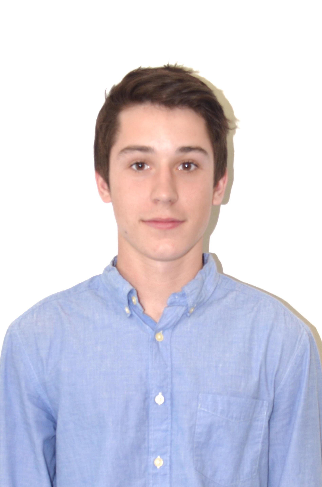
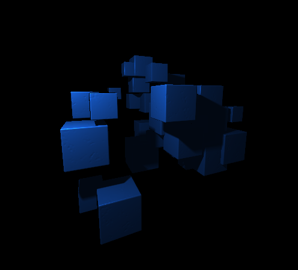
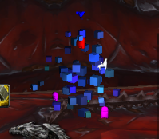
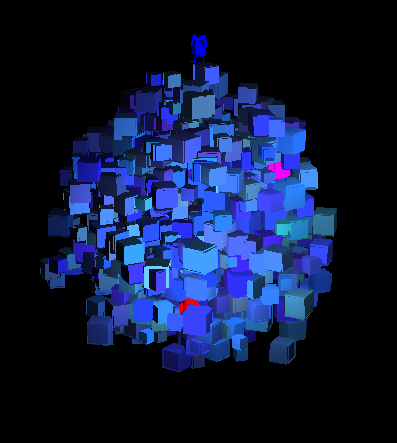
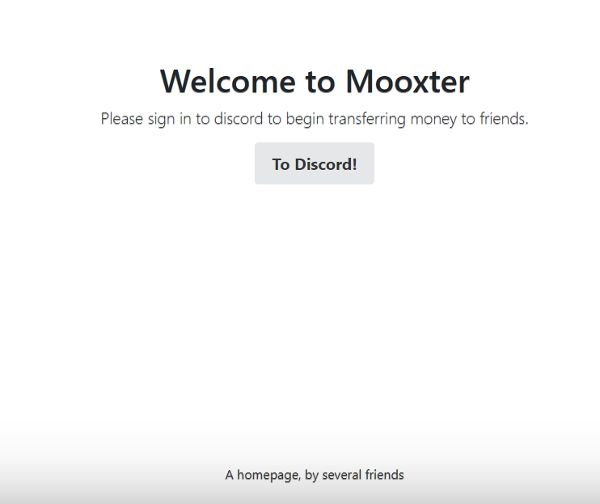
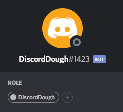

About Me

Computer Science
I'm a software engineer currently working at Red Lens Games on contract with Microsoft. At Red Lens, I have spent nearly 2 years working on various teams for Minecraft. Prior to this I was a software engineer at SpaceX, working on flight software for Starlink focused on software updates. I got my Bachelor's degree in computer engineering from the University of Kansas in 2020.Other Interests
Outside of computer science, I spend a lot of my time playing video games. In the past I have streamed on Twitch. I also enjoy going rock climbing(almost exclusively bouldering) and snowboarding. I climb mostly V3/V4's and the occasional V5.Skills
C++
- Minecraft: Bedrock Edition
- Embedded and Microservice work for SpaceX
- Twitch overlay
- Fluid Simulation
OpenGL
- Twitch overlay
- Fluid Simulation
HTML/CSS/JS
- Personal Portfolio Website
- Mooxter - HackKU 2020
3D Math
- Minecraft: Bedrock Edition
- Twitch overlay
- Fluid Simulation
- Senior Graphics Project
Python
- Microservice work for SpaceX
- Garmin Software Intern
- Mooxter - HackKU 2020
- Graphics Rendering Tool
- Network Student Architect
Unreal Engine
Projects
Twitch Overlay
Computer Graphics

The goal of this project was to use my knowledge of computer graphics to improve my Twitch stream quality. It is implemented as an OpenGl rendered scene that is updated by information gathered by from Twitch. The focus of the scene is a Phong lit mesh particle system, updated every frame by a single compute shader pass. Each follower or subscriber to the channel gets their own individual particle, which they can customize. They can use Twitch chat and soon to be a Twitch extension to change the speed, size, color, and shape of their particle. This is done in real time by communicating with the Twitch API using HTTP/Websocket protocols. All networking code was written from the socket layer without the use of any non-native libraries.
An exploration was done into raymarching in a compute shader instead of the standard graphics pipeline. In this implementation all models were signed-distance fields and had soft shadows and reflections. This implementation did not allow as much customization in terms of models and was not performant enough to run alongside of the stream. The current non-raymarched implementation can support up to 10,000 particles.
Gif Of Overlay
Github Repo
Gallery
Gif Of OverlayRaymarched SDF
Overlay On Stream
1000 Particles
Skew Coordinate Voxel System in UE5
Computer Graphics/Unreal Engine 5
I created a system to voxelize and render an arbitrary polygonal mesh in Unreal Engine 5 based on a non-orthogonal skewed coordinate system. This meant that each voxel was a rhombic prism instead of a cube. This system was built in two parts.
The first being an algorithm I wrote to voxelize an arbitrary polygonal mesh in this skewed coordinate system and save the filled voxel positions to a texture on disk. This step also recorded the closest bone to each voxel to apply any boned animations, if voxelizing a skeletal mesh.
The second part was a system to render these voxels. This was built on top of Unreal's Niagara particle system to render a mesh particle for each voxel. A few compute shaders were written to read the postitions texture and apply any necessary transforms, such as interpolating between positions for movement or applying bone transforms for skeletal meshes.
This data was then piped directly to Niagara's shaders without the need for a CPU readback.
 Animating mesh
Animating mesh
 Thousands of voxels
Thousands of voxels
 Mesh Transformation
Mesh Transformation
Gallery
Animating meshThousands of voxelsMesh TransformationMooxter
HackKU 2020
Mooxter connects with a variety of different services to allow peer to peer XPR transfer on multiple different platforms. Currently implemented is a web UI, along with a Discord bot to allow users to transfer funds. The system was built on a Kubernetes network to allow for scalability and reliability. This project was completed in a 48 hour period for KU's annual hackathon, HackKU. Mooxter won first place in Fintech, one of the two major groups of the competition. The project can be seen on Devpost here.
Github Repo
Gallery
Mooxter Homepage
Mooxter in Discord
Fluid Sim
Computer Graphics
Culminating from an interest in GPU simulated particles, I tried to design a 2D fluid simulation system written with OpenGL compute shaders. This simulation was effectively applying an addition compute shader pass to a GPU-based particle system, similar to the one at the top of this page. Spatial hashing was needed for optimization, since each particle was really only effected by its surrounding neighbors. If this was not used, each physics update would be O(n) per particle. The physics update pass calculated the new positions of each particle and updated their location in the hash table. These new positions were calculated based on the SPH equations. In the scene, each particle is rendered as a single point and color is derived from the forces acting on the particle.
Github Repo
Gallery
WIPGif Of Fluid Sim
Resume